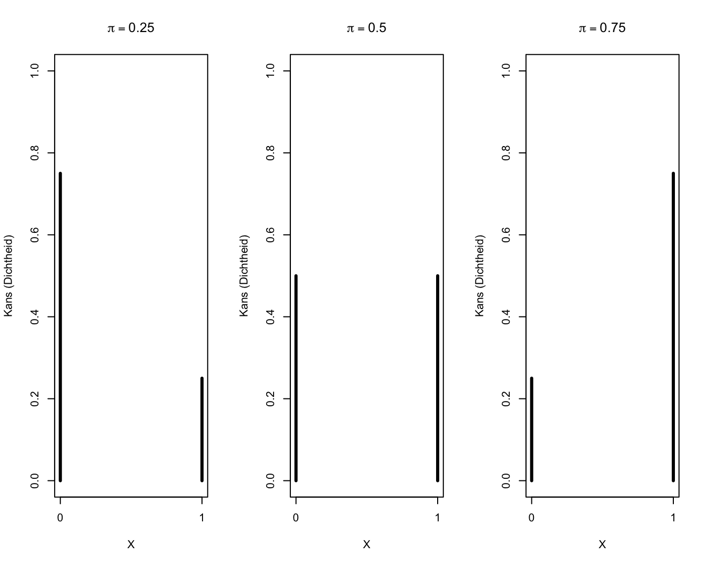
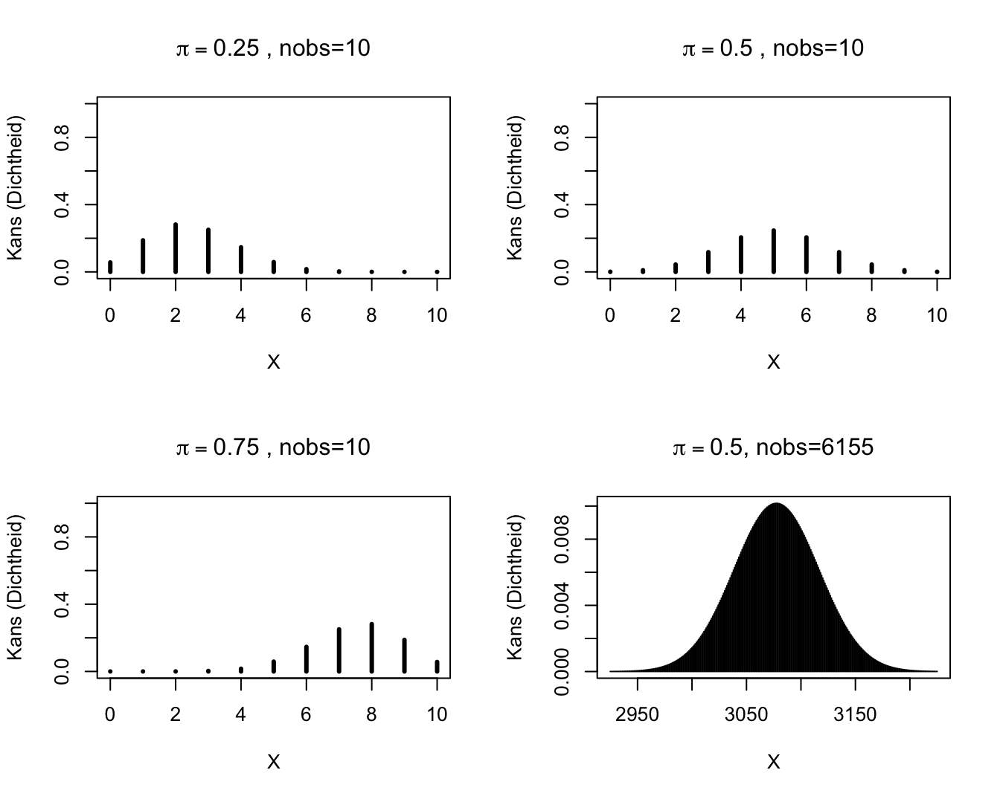
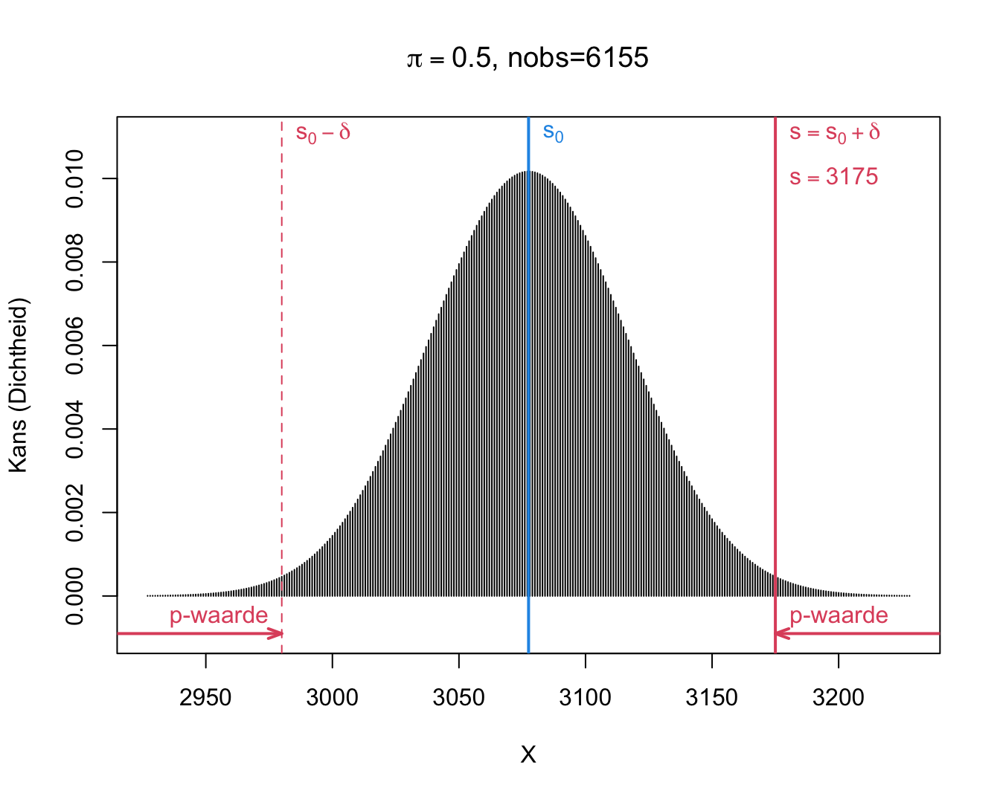
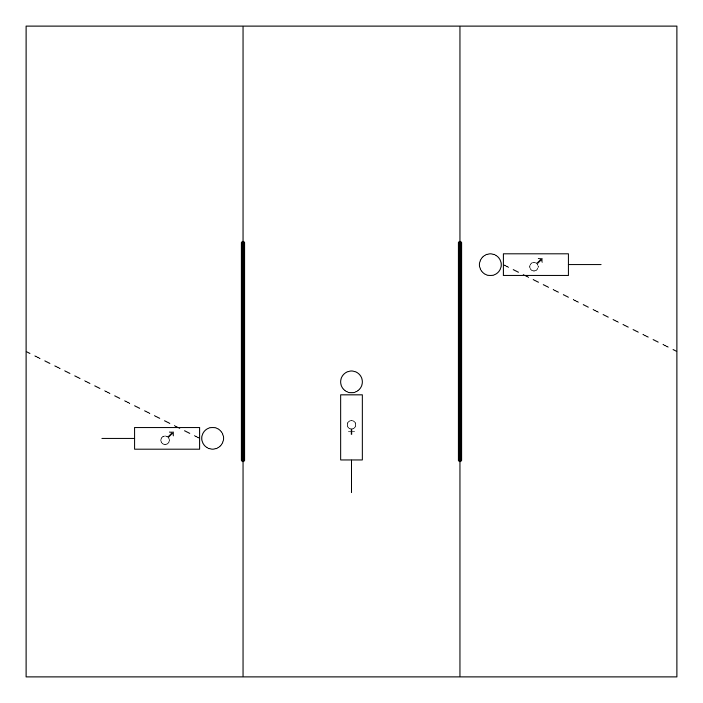
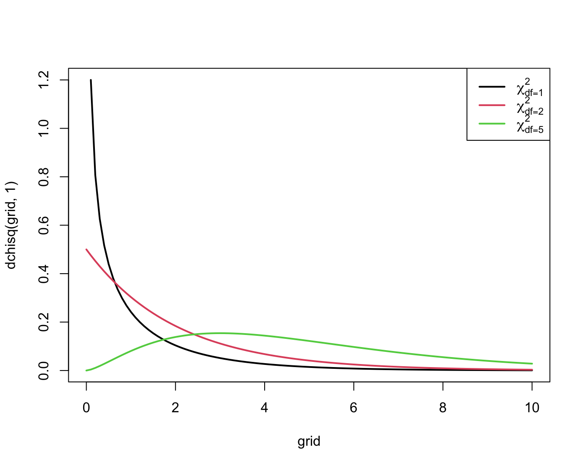
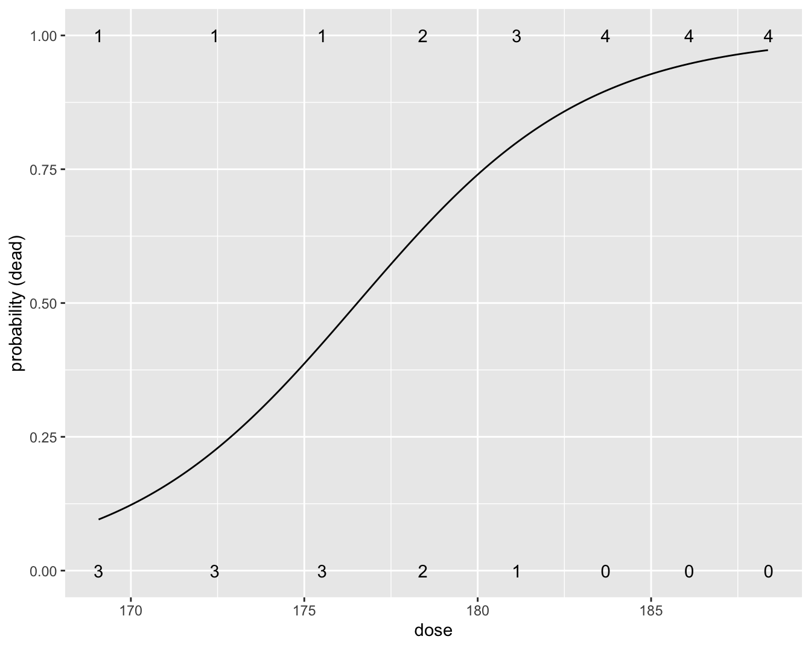

boys <- 3175
n <- 615510 Categorische data analyse
Alle kennisclips die in dit hoofdstuk zijn verwerkt kan je in deze youtube playlist vinden:
Link naar webpage/script die wordt gebruik in de kennisclips:
10.1 Inleiding
Tot nog toe zijn we hoofdzakelijk ingegaan op het modelleren van een continue uitkomst a.d.h.v. een categorische of continue predictor. In dit hoofdstuk onderzoeken we hoe we tot besluitvorming kunnen komen voor een categorische uitkomst. We zullen hierbij focussen op de associatie tussen een categorische uitkomst en een categorische predictor. Zoals we in Sectie 5.6.1 hebben gezien zijn kruistabellen aangewezen om hun associatie voor te stellen.
10.2 Toetsen voor een proportie
In Saksen werd een studie opgezet binnen een vrij gesloten populatie mensen (weinig immigratie en emigratie) om te bepalen hoe waarschijnlijk het was dat een ongeboren kind mannelijk is.
Op 6155 ongeboren kinderen werden 3175 jongens geobserveerd. We wensen na te gaan of er een verschil is in de kans dat het ongeboren kind een jongen is of een meisje. In het vervolg van deze sectie vatten we deze gegevens op als uitkomsten van een numerieke toevalsveranderlijke \(X\) met uitkomst 1 voor jongens en 0 voor meisjes. Merk op dat we hier met een zogenaamd telprobleem te maken hebben omdat de uitkomst een telling (nl. het aantal jongens) voorstelt.
Formeel hebben we nu een populatie van ongeboren kinderen beschouwd waarin elk individu gekenmerkt wordt door een 0 of een 1. De uitkomst variabele is dus binair. Binaire data kan worden gemodelleerd a.d.h.v. een Bernoulli verdeling:
\[X_i \sim B(\pi) \text{ met}\]
\[B(\pi)=\pi^{X_i}(1-\pi)^{(1-X_i)},\]
een distributie met 1 model parameter \(\pi\). \(\pi\) is de verwachte waarde van \(X_i\):
\[\text{E}[X_i]=\pi,\]
de proportie van ongeboren jongens (d.i. kinderen met een 1) in de populatie. Bijgevolg is \(\pi\) ook de kans dat een lukraak getrokken individu een jongen is (een observatie die 1 oplevert).
De variantie van Bernoulli data is eveneens gerelateerd aan de kans \(\pi\).
\[\text{Var}[X_i]=\pi (1-\pi).\]
Een grafische weergave van enkele Bernoulli kansverdelingen wordt weergegeven in Figuur 10.1.

In het voorbeeld werden lukraak 6155 observaties getrokken uit de populatie. We kunnen \(\pi\) schatten op basis van de data d.m.v. het steekproefgemiddelde van de binaire data:
\[\hat \pi = \bar X = \frac{\sum\limits_{i=1}^n X_i}{n},\]
pi <- boys/n
pi[1] 0.5158408In ons voorbeeld is \(\bar x =\) 3175 / 6155 = 51.6%.
De vraag stelt zich nu of het feit dat 51.6% van de kinderen in de studie mannelijk zijn, voldoende overtuigingskracht draagt om te beweren dat er meer kans is dat een ongeboren kind een jongen is dan een meisje. Met andere woorden, we wensen op basis van deze observaties statistisch te toetsen of de kans \(\pi\) al dan niet gelijk is aan 50%.
We zullen die vraag eerst beantwoorden met een asymptotisch betrouwbaarheidsinterval, vervolgens ontwikkelen we een asymptotische test en een exacte test die ook geldig is in kleine steekproeven.
10.2.1 Asymptotisch Betrouwbaarheidsinterval
In de Saksenstudie werd een heel grote steekproef getrokken: 6155 onafhankelijke observaties uit dezelfde populatie (verdeling).
We kunnen dus de centrale limietstelling (CLT) toegepassen op gemiddelde: de data volgen een Bernoulli verdeling, maar gemiddelde o.b.v. onafhankelijke en identiek verdeelde observaties in heel grote steekproef volgt approximatief een normaal verdeling.
Voor Bernoulli verdeelde gegevens weten we dat:
- \(\text{E}[\bar X] = \pi\).
- \(\text{Var}[\bar X] = \frac{\text{Var}[X]}{n} = \frac{\pi(1-\pi)}{n}\).
Uit de steekproef weten we verder dat \(\bar x\) = 0.516 en kunnen we de standard error schatten:
se <- sqrt((pi*(1-pi))/n)De standard error is dus SE = 0.0064
\[\text{SE} = \hat\sigma_{\bar x} = \sqrt{\frac{\bar x(1-\bar x)}{n}}\]
En we bekomen volgend betrouwbaarheidsinterval (BI) op het gemiddelde: [0.503, 0.528]
\[[\bar x - z_{\alpha/2} \text{SE}_{\bar x}, \bar x + z_{\alpha/2} \text{SE}_{\bar x}]\]
0.5 valt niet binnen het 95% BI. Uit de equivalentie tussen betrouwbaarheidsintervallen en statistische testen volgt dus dat de kans op een jongen significant hoger is dan 50% op het 5% significantie-niveau.
10.2.2 Asymptotische Test
Voor een statistische test moeten we de onderzoeksvraag vertalen naar een nul en alternatieve hypothese in termen van een modelparameter. We wensen aan te tonen dat de kans \(\pi\) verschillend is van 50% (alternatieve hypothese). Daarom zullen we de nul hupothese falsifiëren dat \(\pi = 0.5\).
\[H_0: \pi = 0.5 \text{ vs } H_1: \pi \neq 0.5\]
Merk op dat voor een Bernoulli verdeling de variantie onder H\(_0\) ook gekend is: \(\pi_0 (1-\pi_0)\).
Dus onder \(H_0\) is standaard error op \(\bar x\):
\[\text{SE}_{0, \bar x}=\sqrt{\frac{\pi_0 (1-\pi_0)}{n}}\]
We kunnen onder de nulhypothese dus volgende statistiek gebruiken die een afwijking van de nulhypothese in de richting van het alternatief zal detecteren.
\[z = \frac{\bar x - \pi_0}{\text{SE}_{0, \bar x}}\]
Onder \(H_0\) verwachten we z dicht bij 0. Onder \(H_1\) zal z verschuiven naar negatieve (\(\pi < \pi_0\))of positieve waarden (\(\pi>\pi_0\)).
z volgt onder de nulhypothese dat er evenveel kans is op een jongen of een meisje (\(\pi_0=0.5\)) asymptotisch een standaard normaal verdeling: we kunnen immers de CLT toepassen!
We kunnen eenvoudig een p-waarde bekomen door gebruik te maken van de cumulatieve distributie van een standaard normale verdeling. Merk op dat het een tweezijdige test is!
pi0 <- 0.5
se0 <- sqrt(pi0*(1-pi0)/n)
z <- (pi-pi0)/se0
z[1] 2.485539pval <- pnorm(abs(z),lower=FALSE) *2
pval[1] 0.01293554We besluiten dus dat er significant meer kans is dat een ongeboren kind mannelijk dan vrouwelijk is (p=0.013). De kans dat een ongeboren kind mannelijk is bedraagt 0.516 (95% BI [0.503, 0.528]).
10.2.3 Binomiale test
Om een toets te kunnen construeren van de nulhypothese dat
\[H_0: \pi=1/2 \text{ versus } H_1: \pi\neq 1/2,\]
moeten we de verdeling van de gegevens \(X\) en van de schatter voor de proportie, \(\hat \pi = \bar X\) (of equivalent de som \(S=n\bar X\)) kennen.
Stel dat het voorkomen van jongens en meisjes in de populatie even waarschijnlijk zijn; m.a.w. stel dat de nulhypothese waar is. Bij lukrake trekking van één individu uit de populatie is de kans dat men een jongen observeert dan gelijk aan \(P(X=1) = \pi = 1/2.\) Als twee kinderen onafhankelijk van elkaar getrokken worden (en de populatie is bij benadering oneindig groot) dan heeft zowel het eerste als het tweede kind kans 1/2 om mannelijk te zijn (onafhankelijk van elkaar). De uitkomsten \((x_1, x_2)\) voor beide kinderen hebben dan 4 mogelijke waarden: \((0,0), (0,1),(1,0)\) en \((1,1).\) Deze komen elk voor met kans \(1/4 = 1/2 \times 1/2\). Bijgevolg kan de toevalsveranderlijke \(S\) die de som van de uitkomsten weergeeft, de volgende waarden aannemen:
| \((x_1,x_2)\) | \(s\) | \(P(S=s)\) |
|---|---|---|
| (0,0) | 0 | 1/4 |
| (0,1),(1,0) | 1 | 1/2 |
| (1,1) | 2 | 1/4 |
In het algemeen, als men \(n\) onafhankelijke observaties trekt telkens met kans \(\pi\) op “succes” (uitkomst 1), dan kan het totaal aantal successen \(S\) (of de som van alle 1-en), \(n+1\) mogelijke waarden hebben. Men kan aantonen dat elke waarde \(k\) tussen 0 en \(n\) dan de volgende kans op voorkomen heeft:
\[ P(S=k) = \left ( \begin{array}{c} n \\ k \\ \end{array} \right ) \pi^k (1-\pi)^{n-k} \tag{10.1}\]
waarbij \(1-\pi\) de kans is op mislukking in 1 enkele trekking (uitkomst met 0 genoteerd) en \(\left(\begin{array}{c} n \\ k \\ \end{array}\right)\) de binomiaalcoëfficient1
\[\begin{equation*} \left ( \begin{array}{c} n \\ k \\ \end{array} \right ) = \frac{n \times (n-1) \times ...\times (n-k+1) }{ k!} = \frac{ n!}{ k!(n-k)! } \end{equation*}\]
is, waarbij \(0!=1!=1\).
In R kan je die kansen opvragen met behulp van het commando dbinom(k,n,p).
Een toevalsveranderlijke \(S\) met een kansverdeling zoals in Model 10.1 noemt men een Binomiaal verdeelde toevalsveranderlijke. De bijhorende kansverdeling is de Binomiale kansverdeling met parameters \(n\) (d.i. het aantal trekkingen of, equivalent, de maximale uitkomstwaarde) en \(\pi\) (de kans op een `succes’ bij elke trekking). Ze kan gebruikt worden om te berekenen wat de kans is dat er zich op een vast totaal van \(n\) onafhankelijke experimenten \(k\) gebeurtenissen van een bepaald type voordoen, als je weet dat de kans dat zich 1 zo’n gebeurtenis voordoet op 1 experiment, \(\pi\) bedraagt. De Binomiale kansverdeling wordt vooral gebruikt voor de analyse van gegevens die slechts 2 mogelijke waarden kunnen aannemen. Dergelijke gegevens komen vaak voor in wetenschappelijk onderzoek (bijvoorbeeld: al dan niet besmet met HIV, wild type van een gen vs een mutant,…). Kennis van de Binomiale verdeling kan dan helpen om proporties of risico’s op een gebeurtenis van een bepaald type te vergelijken tussen verschillende groepen. Een grafische weergave van enkele Binomiale kansverdelingen is gegeven in Figuur 10.2.

Om nu te toetsen of \(\pi=1/2\) versus het alternatief dat \(\pi\neq 1/2\), is een voor de hand liggende toetsstatistiek \(\bar X-1/2\) of, equivalent, \(\Delta=n(\bar X-\pi_0)=S-s_0\). De verdeling van deze laatste toetsstatistiek volgt rechtstreeks uit de Binomiale verdeling.
We observeren \(s=\) 3175 en dus \(\delta=s-s_0=\) 3175 \(-\) 6155 \(\times 0.5=\) 97.5. In de onderstelling dat jongens en meisjes even waarschijnlijk zijn (d.i. onder de nulhypothese \(H_0:\pi=1/2\)), kunnen we de bijhorende tweezijdige p-waarde berekenen als de kans dat de uitkomst
\[p=\text{P}_0\left[S-s_0\geq \vert \delta\vert \right] + \text{P}_0\left[S-s_0\leq - \vert \delta\vert \right].\]
Merk op dat we dit kunnen herschrijven in termen van S.
\[p=\text{P}_0\left[S\geq s_0+ \vert \delta\vert \right] + \text{P}_0\left[S \leq s_0 - \vert \delta\vert \right].\]
Voor ons voorbeeld kunnen we deze kansen als volgt berekenen:
\[\begin{eqnarray*} \text{P}_0\left[S\geq s_0+ \vert \delta\vert \right] &=& P(S \geq 6155 \times 0.5 + \vert 3175 - 6155 \times 0.5\vert ) = P(S \geq 3175)\\ &= &P(S= 3175) + P(S=3176) + ... + P(S=6155)\\ & =& 0.0067\\\\ \text{P}_0\left[S \leq s_0 - \vert \delta\vert \right] &=& P(S \leq 6155 \times 0.5 - \vert 3175- 6155 \times 0.5\vert) = P(S \leq 2980)\\ &= &P(S=0) + ... + P(S=2980) \\ &=&0.0067 \end{eqnarray*}\]
Gezien \(\pi=0.5\) zijn deze kansen gelijk omdat de binomiale distributie dan symmetrisch is. Dat is niet langer het geval wanneer \(\pi\) afwijkt van 0.5.
In R kan men de kansen berekenen via de commando’s:
pi0 <- 0.5
s0 <- pi0 *n
delta <- abs(boys- s0)
delta[1] 97.5sUp <- s0 + delta
sDown <- s0 -delta
c(sDown,sUp)[1] 2980 3175#Merk op dat we voor de berekening naar rechts
#pbinom(sUp-1,n,pi) gebruiken omdat we met
#pbinom de kans berekenen in de linkse staart
#anders wordt s=3175 er niet bij geteld!
pUp <- 1 - pbinom(sUp-1, n, pi0)
pUp[1] 0.006699883pDown <- pbinom(sDown, n, pi0)
pDown[1] 0.006699883p <- pUp+pDown
p[1] 0.01339977waarbij pbinom(sUp-1,n,pi0) de kans op een resultaat kleiner of gelijk aan \(s_0+\vert \delta\vert -1 =\) 3174 berekent. Als \(\pi= 1/2\), dan zou de kans om door toeval minstens \(\delta=\) 97.5 jongens meer of minder te observeren dan het gemiddelde onder \(H_0: s_0=\) 3077.5 , slechts 1.34% is, de \(p\)-waarde van de binomiale test.
Dit geeft aan dat het heel onwaarschijnlijk is om een dergelijk groot aantal jongens te observeren als in realiteit jongens en meisjes even waarschijnlijk zijn. Het drukt met andere woorden uit dat de onderstelling dat jongens en meisjes even waarschijnlijk zijn, weinig gesteund wordt door de data. Dit blijkt ook uit Figuur 10.3.

De test kan eveneens worden uitgevoerd a.d.h.v. de binomial.test functie in R.
binom.test(x = boys, n = n, p = pi0)
Exact binomial test
data: boys and n
number of successes = 3175, number of trials = 6155, p-value = 0.0134
alternative hypothesis: true probability of success is not equal to 0.5
95 percent confidence interval:
0.5032696 0.5283969
sample estimates:
probability of success
0.5158408 Op het 5% significantie-niveau besluiten we dat er meer kans is dat een ongeboren kind mannelijk dan vrouwelijk is.
Voor de Saksen-studie ligt het BI op basis van de CLT heel dicht bij het exacte BI omdat de studie is gebaseerd op een grote steekproef (\(n=\) 6155).
De Binomiale test heeft ook een exact BI weer op een proportie.
Het exacte BI is te verkiezen boven het BI dat gebaseerd is op de CLT.
Voor Saksen-studie ligt BI o.b.v. CLT heel dicht bij exacte BI: grote steekproef (\(n=\) 6155).
Merk op dat het testen voor een proportie kan gezien worden als het equivalent van een one-sample t-test voor binaire data.
10.2.4 Conclusie
Voor de Saksen populatie besluiten we op het 5% significantieniveau dat er meer kans is dat een ongeboren kind mannelijk dan vrouwelijk is (\(p=\) 0.013). De kans dat een ongeboren kind mannelijk is, bedraagt 51.6% (95% BI [50.3,52.8]%).
10.3 Toets voor associatie tussen 2 kwalitatieve variabelen
10.3.1 Gepaarde gegevens
Net zoals bij het vergelijken van gemiddelden (uitkomsten op 2 continue veranderlijken) is het ook hier in principe mogelijk dezelfde individuen 2 keer te meten (bijvoorbeeld, vóór en na blootstelling aan de experimentele stof) en telkens de uitkomst te observeren. In dat geval hebben we te maken met gepaarde binaire uitkomsten en moeten we in de statistische analyse rekening houden met de paring.
10.3.1.1 Voorbeeld
Rogovin e.a. (2017) onderzochten de partnerkeuze van seksueel mature vrouwelijke Campbelli dwerghamster. Hiervoor bekeken ze verschillende karakteristieken van de mannetjes, waaronder seksgerelateerde morfologische kenmerken (lichaamsmassa, externe testikel diameter), testosteron niveau, immunocompetentie kenmerken (de concentratie aan T-cel en B-cel immuuncellen in het bloed), maar ook gedragskenmerken zoals agressiviteit en seksuele dominantie van het mannetje.
De experimentele set-up betreft een rechthoekige doos van plexiglas met drie compartimenten, waarin het vrouwtje zich in het middenste gedeelte bevindt (zie Figuur 10.4).

De mannetjes, die overigens broers zijn, hangen vast aan de doos waardoor ze zich slechts over drie vierden van de ruimte van hun compartiment vrij kunnen bewegen. Na alle dieren enkele minuten te laten acclimatiseren worden niet-doorzichtige wanden die de compartimenten scheidden, opgetrokken waardoor het vrouwtje zich via de aangegeven deurtjes naar de mannetjes kan begeven. Aangezien de mannetjes zich niet buiten hun compartiment kunnen begeven, ligt de keuze volledig in de handen van het vrouwtje. Het wordt aangenomen dat het vrouwtje een partnerkeuze maakt indien ze meer dan twee derden van de tijd met één mannetje doorbrengt, relatief ten opzichte van de totale tijd die ze met mannetjes doorbrengt.
Elk vrouwtje onderging tweemaal de test, waarbij ze telkens kon kiezen tussen één agressief en één niet-agressief mannetje. Om te onderzoeken of de partnerkeuze van het vrouwtje beïnvloed wordt door de omgeving, kwam het vrouwtje in één van de testen uit een vijandige omgeving (hoge populatie, weinig voedsel, veel concurrentie) en in een andere test uit een vriendelijkere omgeving.
De resultaten van de studie zijn samengevat in de onderstaande kruistabel (Tabel 10.1).
hamster <- matrix(c(3,17,1,13),ncol=2,byrow=TRUE)
rownames(hamster) <- c("vijandig-agressief", "vijandig-niet-agressief")
colnames(hamster) <- c("vriendelijk-agressief","vriendelijk-niet-agressief")| vriendelijk-agressief | vriendelijk-niet-agressief | totaal | |
|---|---|---|---|
| vijandig-agressief | 3 (e) | 17 (f) | 20 |
| vijandig-niet-agressief | 1 (g) | 13 (h) | 14 |
| totaal | 4 | 30 | 34 |
De kans op de keuze voor een agressief mannetje na verblijf in een vijandige omgeving noteren we als \(\pi_1\) en kunnen we schatten als \((e+f)/n\), waarbij \(n=e+f+g+h\). De kans op de keuze voor een agressief mannetje na een vriendelijke omgeving noteren we met \(\pi_0\) en kunnen we schatten als \((e+g)/n\). Het verschil tussen beide kansen, het absoluut riscoverschil (ARV), schatten we als
\[\begin{equation*} \widehat{\text{ARV}}=\hat\pi_1-\hat\pi_0=\frac{e+f}{n}-\frac{e+g}{n}=\frac{f-g}{n} \end{equation*}\]
en wordt enkel beïnvloed door de aantallen discordante paren \(f\) en \(g\)2. Men kan aantonen dat de standaard error van dit verschil gelijk is aan
\[\begin{equation*} \text{SE}_{\widehat{\text{ARV}}}=\frac{1}{n}\sqrt{f+g-\frac{(f-g)^2}{n}} \end{equation*}\]
Als er voldoende gegevens zijn, kan men een \((1-\alpha)100\%\) betrouwbaarheidsinterval voor het absolute risicoverschil op de keuze voor een agressief mannetje t.g.v. de omgeving schatten als
\[\left[\widehat{\text{ARV}}-z_{\alpha/2}\text{SE}_{\widehat{\text{ARV}}},\widehat{\text{ARV}}+z_{\alpha/2}\text{SE}_{\widehat{\text{ARV}}}\right]\]
of
\[\left[\frac{f-g}{n}-\frac{z_{\alpha/2}}{n}\sqrt{f+g-\frac{(f-g)^2}{n}},\frac{f-g}{n}+\frac{z_{\alpha/2}}{n}\sqrt{f+g-\frac{(f-g)^2}{n}}\right] \]
f <- hamster[1,2]
g <- hamster[2,1]
n <- sum(hamster)
riskdiff <- (f-g)/n
riskdiff[1] 0.4705882se <- sqrt(f+g-(f-g)^2/n)/n
se[1] 0.09517144bi <- riskdiff + c(-1,1)*qnorm(0.975)*se
bi[1] 0.2840556 0.6571208Het absolute risicoverschil op de keuze van een agressief mannetje tussen een verblijf in een vijandige en vriendelijke omgeving bedraagt
\[\begin{equation*} \widehat{\text{ARV}}=\frac{17-1}{34}=0.471 \end{equation*}\]
of 47.1%. De standaard error van dit verschil is
\[\begin{equation*} \text{SE}_{\widehat{\text{ARV}}}=\frac{1}{34}\sqrt{17+1-\frac{(17-1)^2}{34}}=0.0952 \end{equation*}\]
Een 95% betrouwbaarheidsinterval absolute risicoverschil op de keuze van een agressief mannetje tussen een verblijf in een vijandige en vriendelijke omgeving is bijgevolg
\[\begin{equation*} \left[0.471-1.96\times 0.0952,0.471+1.96\times 0.0952\right]=[0.284,0.658] \end{equation*}\]
We hebben dus geschat dat het absolute risico met 95% kans in het interval [28.4,65.8]% ligt.
10.3.1.2 McNemar test
We gaan vervolgens na hoe we kunnen toetsen of de risico’s verschillen tussen de vijandige en vriendelijke omgeving. Indien alle vrouwtjes in zowel de vijandige als vriendelijke omgeving dezelfde partnerkeuze hadden, dan was er geen informatie over de vraag of de omgeving geassocieerd is met de partnerkeuze. Enkel de discordante paren leveren hier informatie over. Als er meer discordante paren zijn waar een vrouwtje een agressief mannetje kiest na verblijf in een vijandige omgeving en een niet-agressief mannetje na een vriendelijke omgeving, dan discordante paren waar het vrouwtje een niet-agressief mannetje kiest na verblijf in een vijandige omgeving en een agressief mannetje kiest na een vriendelijke omgeving, dan is er een indicatie tegen de nulhypothese dat er geen associatie is tussen de partnerkeuze en de omgeving. Men kan daarom toetsen of de partnerkeuze geassocieerd is met de omgeving door de kans te evalueren dat in een lukraak discordant paar, het vrouwtje na verblijf in een vijandige omgeving kiest voor het agressieve mannetje. Deze kans wordt geschat als \(f/(f+g)\) en wordt verwacht in de buurt van 0.5 te liggen als de nulhypothese geldt dat er geen associatie is tussen partnerkeuze en omgeving. Meer bepaald volgt het getal \(f\) binnen de groep discordante paren onder de nulhypothese een Binomiale verdeling met parameters \(f+g\) en 0.5. De standaarddeviatie van \(f\) is bijgevolg gelijk aan
\[\begin{equation*} \sqrt{(f+g)\times 0.5\times 0.5}=\frac{\sqrt{f+g}}{2} \end{equation*}\]
onder de nulhypothese. Op voorwaarde dat er voldoende observaties zijn, kan men nu de one-sample z-test3 gebruiken om te toetsen of de kans dat een lukraak discordant paar in de cel rechtsboven van de tabel gelegen is, 0.5 bedraagt. M.a.w. bekijken we het gestandaardiseerde verschil tussen \(f\) en haar verwachtingswaarde onder de nulhypothese:
\[\begin{equation*} \frac{f-(f+g)/2}{\sqrt{f+g}/2}=\frac{f-g}{\sqrt{f+g}} \end{equation*}\]
die bij benadering een Normale verdeling volgt onder de nulhypothese. De Normale benadering is goed als
\[f \times g/(f+g) \geq 5\]
De toets gebaseerd op bovenstaande toetsingsgrootheid heet de Mc Nemar toets.
In kleine steekproeven is het meer aangewezen om een continuïteitscorrectie te gebruiken d.m.v. de toetsingsgrootheid
\[\begin{equation*} \frac{|f-g|-1}{\sqrt{f+g}} \end{equation*}\]
De Mc Nemar test wordt gebruikt om te toetsen of er een associatie is tussen 2 kwalitatieve, binaire variabelen, i.h.b. om te toetsen of de kans op succes voor de ene variabele verschilt tussen de 2 strata van de andere kwalitatieve variabele. Ze vereist dat alle metingen voor de ene kwalitatieve variabele (uitkomst) in het ene stratum van de andere kwalitatieve variabele, onafhankelijk zijn, en dat elke meting uit het ene stratum gepaard is met een meting uit het andere stratum in die zin dat ze van verwante subjecten afkomstig zijn. Op die manier vormt ze het analogon van de gepaarde t-test voor binaire, kwalitatieve i.p.v. continue variabelen.
We voeren nu de analyse uit voor het hamstervoorbeeld in R:
correct <- f*g/(f+g)
correct[1] 0.9444444#continuiteitscorrectie
z <- (abs(f-g)-1)/sqrt(f+g)
z[1] 3.535534p <- (1-pnorm(z))*2
p[1] 0.000406952Voor het dwerghamster voorbeeld observeren we dat \(f\times g/(f+g)=\) 0.944 \(<5\). We zullen dus de continuïteitscorrectie uitvoeren. De McNemar toetsingsgrootheid bedraagt \((\vert 17-1 \vert -1)/\sqrt{17+1}=\) 3.54. De kans dat een Normaal verdeelde toevalsveranderlijke groter is dan 3.54 of kleiner is dan -3.54 bedraagt 0.0407% en stelt ook de p-waarde van de toets voor. We verwerpen bijgevolg de nulhypothese op het 5% significantieniveau en besluiten dat de parternkeuze extreem significant geassocieerd is met de omgeving.
In R kan de analyse ook worden uitgevoerd a.d.h.v. de mcnemar.test functie
mcnemar.test(hamster)
McNemar's Chi-squared test with continuity correction
data: hamster
McNemar's chi-squared = 12.5, df = 1, p-value = 0.000407We zien dat hier eveneens de continuïteitscorrectie werd uitgevoerd en dat we exact dezelfde p-waarde bekomen.
Merk echter op dat de Normale benadering van deze toetstatistiek niet ideaal is omdat \(f \times g/(f+g)=\) 0.944 \(<5\). Bovenstaande p-waarde is om die reden niet accuraat.
Het is steeds meer aangewezen om een exacte toets te gebruiken op basis van het principe in Sectie 10.2.3. Dergelijke toetsen maken gebruik van de exacte Binomiale verdeling van de gegevens om te toetsen of de kans dat een lukraak discordant paar in de cel rechtsboven van de tabel gelegen is, 0.5 bedraagt.
binom.test(x = f,
n = f + g,
p = 0.5)
Exact binomial test
data: f and f + g
number of successes = 17, number of trials = 18, p-value = 0.000145
alternative hypothesis: true probability of success is not equal to 0.5
95 percent confidence interval:
0.7270564 0.9985944
sample estimates:
probability of success
0.9444444 10.3.1.3 Conclusie
Op basis van de exacte test besluiten we eveneens dat de parternkeuze extreem significant geassocieerd is met de omgeving (\(p<0.001\)). De kans op de keuze van een agressief mannetje ligt 47.1% hoger als een dwerghamster vrouwtje zich in een vijandige omgeving bevindt dan wanneer ze zich in een vriendelijke omgeving bevindt (95% BI [28.4,65.7]%).
10.3.2 Ongepaarde gegevens
We beschouwen hier opnieuw Voorbeeld 4.16. Het is belangrijk om dit voorbeeld eerst grondig door te nemen alsook de Sectie rond data exploratie van categorische variabelen (Sectie 5.5).
Deze genetische associatiestudie was erop gericht om na te gaan of polymorfismen in het BRCA1 gen geassocieerd is met borstkanker. Het was een retrospectieve case-controle studie die 800 borstkankercases en 572 controles omvatte. Een R object met de data is opgeslagen in de file brca.rda in de dataset folder.
brca <- read_csv("https://raw.githubusercontent.com/statOmics/sbc/master/data/brca.csv")
head(brca)# A tibble: 6 × 3
cancer variant variant2
<chr> <chr> <chr>
1 control pro/pro other
2 control pro/pro other
3 control pro/pro other
4 control pro/pro other
5 control pro/pro other
6 control pro/pro other summary(brca) cancer variant variant2
Length :1372 Length :1372 Length :1372
N.unique : 2 N.unique : 3 N.unique : 2
N.blank : 0 N.blank : 0 N.blank : 0
Min.nchar: 4 Min.nchar: 7 Min.nchar: 5
Max.nchar: 7 Max.nchar: 7 Max.nchar: 7 De dataset bevat 3 categorische variabelen: de ziekte status (factor cancer: controle vs case), brca variant (variant: wild type Pro/Pro, enkele mutatie Pro/Leu, dubbele mutatie Leu/Leu) en een factor of men de dubbele Leu/Leu mutatie bevat of niet (variant2).
Een kruistabel kan in R verkregen worden door
brcaTab <- table(brca$variant,brca$cancer)
brcaTab
case control
leu/leu 89 56
pro/leu 369 250
pro/pro 342 266Informatie omtrent het BRCA1-polymorfisme werd bekomen via DNA-analyse en staat opnieuw getabuleerd in Tabel 10.2.
| Genotype | Controles | Cases | Totaal |
|---|---|---|---|
| Pro/Pro | 266 (a) | 342 (d) | 608 (a+d) |
| Pro/Leu | 250 (b) | 369 (e) | 619 (b+e) |
| Leu/Leu | 56 (c) | 89 (f) | 145 (c+f) |
| Totaal | 572 (a+b+c) | 800 (d+e+f) | 1372 (n) |
In Sectie 5.5.2 zagen we reeds dat het relatief risico op de aandoening (d.w.z. op case) in de populatie voor blootgestelden versus niet-blootgestelden niet rechtstreeks kan geschat worden op basis van gegevens uit een case-controle studie. We zagen dat we wel een uitspraak konden doen hierover a.d.h.v. odds ratio’s, gezien het een symmetrische associatie maat is.
In voorbeeld 4.16 konden we daarom de odds op borstkanker berekenen voor vrouwen met allel Leu/Leu versus vrouwen zonder de dubbele mutatie als \(OR=89\times (266+250)/(56\times (342+369))=89\times 512/(56 \times 711)=1.15\). De odds op borstkanker is bijgevolg 15% hoger bij vrouwen met die specifieke allelcombinatie. We kunnen ons nu afvragen of dat verschil groot genoeg is zodat we het effect die we in de steekproef zien kunnen veralgemenen naar de populatie toe.
Hiertoe zullen we de kruistabel eerst herschrijven tot een 2x2 tabel zodat we de vrouwen met een Leu/Leu variant vergelijken met de vrouwen in de studie die niet homozygoot zijn in de mutatie4 (Tabel 10.3).
brcaTab2 <- table(brca$variant2, brca$cancer)
brcaTab2
case control
leu/leu 89 56
other 711 516| Genotype | Controles | Cases | Totaal |
|---|---|---|---|
| andere | 516 (a) | 711 (c) | 1227 (a+c) |
| Leu/Leu | 56 (b) | 89 (d) | 145 (b+d) |
| Totaal | 572 (a+b) | 800 (c+d) | 1372 (n) |
10.3.3 De Pearson Chi-kwadraat test voor ongepaarde gegevens
We zullen een toets ontwikkelen voor het testen van associatie tussen de categorische blootstelling (bvb. variant, X) en de categorische uitkomst (bvb. ziekte, Y). Concreet zullen we
\[H_0: \text{Er is geen associatie tussen } X \text{ en } Y \text{ vs } H_1: X \text{ en } Y \text{ zijn geassocieerd}\]
testen.
Beschouw de rijtotalen \(n_\text{andere}=a+c\), \(n_\text{leu,leu}=b+d\) enerzijds en de kolomtotalen \(n_\text{contr}=a+b\) en \(n_\text{case}=c+d\) anderzijds. Zij verstrekken informatie over de marginale verdeling van de blootstelling (bvb. variant, X) en de uitkomst (bvb. ziekte, Y), maar niet over de associatie tussen die veranderlijken. Als de nulhypothese waar is dat \(X\) en \(Y\) onafhankelijk zijn, dan verwacht men dat een proportie \((b+d)/n\) van \(a+b\) controles met een Leu/Leu variant, of dat \((a+b)(b+d)/n\) een Leu/Leu variant hebben omdat een proportie \((b+d)/n\) van alle geobserveerde individuen een Leu/Leu variant heeft. Analoog kan men op basis van de marginale gegevens het verwachte aantal berekenen dat onder de nulhypothese in elke cel van de \(2\times 2\) tabel zou liggen. Dit verwachte aantal onder \(H_0\) in de \((i,j)\)-de cel (conditioneel op de marges van de tabel) wordt aangeduid met \(E_{ij}\) en is het product van het \(i\)-de rijtotaal met het \(j\)-de kolomtotaal gedeeld door het algemene totaal. In bovenstaand voorbeeld vinden we
\(E_{11}\) = het verwachte aantal onder \(H_0\) in de (1,1)-cel = 145 \(\times\) 800/1372 = 84.55 ;
\(E_{12}\) = het verwachte aantal onder \(H_0\) in de (1,2)-cel = 145 \(\times\) 572/1372 = 60.45 ;
\(E_{21}\) = het verwachte aantal onder \(H_0\) in de (2,1)-cel = 1227 \(\times\) 800/1372 = 715.5 ;
\(E_{22}\) = het verwachte aantal onder \(H_0\) in de (2,2)-cel = 1227 \(\times\) 572/1372 = 511.5 ;
Een toets van de nulhypothese gebeurt nu op basis van een vergelijking tussen de geobserveerde aantallen in cellen \((i,j),\) genoteerd met \(O_{ij}\) en de verwachte aantallen \(E_{ij}\). In dat opzicht levert de toetsingsgrootheid
\[\begin{equation*} X^2 = \frac{\left (|O_{11} - E_{11}| - .5 \right)^2 }{ E_{11}} + \frac{ \left ( |O_{12} - E_{12}| - .5 \right)^2 }{E_{12} }+ \frac{ \left ( |O_{21} - E_{21}| - .5 \right)^2 }{E_{21}}+ \frac{ \left ( |O_{22} - E_{22}| - .5 \right)^2 }{E_{22} } \end{equation*}\]
een goede discriminatie tussen de nulhypothese en de alternatieve hypothese. Men kan aantonen dat ze onder de nulhypothese bij benadering een zogenaamde \(\chi^2\)-verdeling volgt met 1 vrijheidsgraad. Deze verdeling neemt uiteraard alleen positieve waarden aan en is scheef naar rechts verdeeld, behalve als het aantal vrijheidsgraden groot is (minstens 100), in welk geval ze meer symmetrisch wordt.
Figuur 10.5 toont haar algemene vorm.

Een grote waarde van de toetsingsgrootheid geeft een indicatie van een afwijking van de nulhypothese. Concreet zal een toets op het \(\alpha 100\%\) significantieniveau de nulhypothese verwerpen zodra de geobserveerde waarde van de toetsingsgrootheid het \(100\%(1-\alpha)\)-percentiel, \(\chi^2_{1, \alpha}\), van de \(\chi^2_1\)-verdeling overschrijdt. Ze kan niet verwerpen in het andere geval. De p-waarde voor een 2-zijdige toets is in dit geval de kans om een grotere waarde voor de toetsingsgrootheid te observeren dan de geobserveerde waarde \(x^2\) als de nulhypothese waar is. Dit is de kans dat een \(\chi^2_1\)-verdeelde toevalsveranderlijke waarden groter dan \(x^2\) aanneemt.
expected <- matrix(0, nrow = 2, ncol = 2)
for (i in 1:2)
for (j in 1:2)
expected[i,j] <- sum(brcaTab2[i,]) * sum(brcaTab2[,j]) / sum(brcaTab2)
expected [,1] [,2]
[1,] 84.5481 60.4519
[2,] 715.4519 511.5481x2 <- sum((abs(brcaTab2 - expected) - .5)^2 / expected)
1-pchisq(x2, 1)[1] 0.481519Omdat de observaties \(O_{ij}\) in feite discrete getallen zijn, kan de toetsingsgrootheid \(X^2\) slechts discrete waarden aannemen en kan een continue verdeling zoals de \(\chi^2_1\)-verdeling slechts een benadering zijn voor haar werkelijke verdeling. Om de discrete verdeling beter bij de continue \(\chi^2_1\)-verdeling te doen aansluiten, heeft men in de uitdrukking van de toetsingsgrootheid voor elke cel telkens 0.5 afgetrokken. Dit wordt een continuïteitscorrectie genoemd. In dit geval gaat het om de correctie van Yates en noemt men deze toets dan ook de Pearson Chi-kwadraat toets met Yates correctie. Wanneer de correctie niet gebruikt wordt (d.w.z. wanneer de getallen `0.5’ in de uitdrukking voor \(X^2\) door 0 vervangen worden), dan spreekt men van de Pearson Chi-kwadraat toets. In R kan je deze toetsen uitvoeren door de optie op TRUE of FALSE te zetten:
chisq.test(brcaTab2)
Pearson's Chi-squared test with Yates' continuity correction
data: brcaTab2
X-squared = 0.49542, df = 1, p-value = 0.4815chisq.test(brcaTab2, correct = FALSE)
Pearson's Chi-squared test
data: brcaTab2
X-squared = 0.62871, df = 1, p-value = 0.4278Zelfs wanneer de continuïteitscorrectie wordt gebruikt, zal de \(\chi^2_1\) benadering voor de verdeling van de toetsingsgrootheid slechts verantwoord zijn als in geen enkele van de cellen het verwachte aantal onder \(H_0\) kleiner is dan 5. Wanneer de \(\chi^2\)-benadering niet verantwoord is, kan men een exacte toets uitvoeren die rekening houdt met de echte mogelijke verdelingen van de marginale tellingen over de individuele cellen in de tabel. Dergelijke test maakt bijgevolg geen \(\chi^2\)-benadering voor de verdeling van de toetsingsgrootheid onder de nulhypothese. De test die met de exacte verdeling van de marginale tellingen over de individuele cellen rekening houdt, wordt in de literatuur Fisher’s exact test genoemd. De nulhypothese van deze test is eveneens dat \(X\) en \(Y\) onafhankelijk zijn, en de alternatieve hypothese dat \(X\) en \(Y\) afhankelijk zijn. Een nadeel van de exacte test, is dat ze conservatief is (d.w.z. dat ze een kleinere kans hebben op een Type I fout dan vooropgesteld, en bijgevolg een grotere kans op Type II fouten). In R bekomt men deze test als volgt:
fisher.test(brcaTab2)
Fisher's Exact Test for Count Data
data: brcaTab2
p-value = 0.4764
alternative hypothesis: true odds ratio is not equal to 1
95 percent confidence interval:
0.7998798 1.6738449
sample estimates:
odds ratio
1.153279 Merk op dat deze functie tevens 95% betrouwbaarheidsintervallen rapporteert voor de bijhorende odds ratio.
10.3.3.1 Uitbreiding naar categorische variabelen met meerdere niveaus
Als minstens 1 van de discrete variabelen \(X\) en \(Y\) meer dan 2 mogelijke waarden aanneemt, kan men nagaan of de kansverdeling van \(Y\) afhangt van de \(X\)-waarde in de populatie door een veralgemening van de \(\chi^2\)-toets uit vorige sectie. Ook hier toetst men de nulhypothese \(H_0: X\) en \(Y\) zijn onafhankelijk, ten opzichte van het tweezijdig alternatief \(H_A: X\) en \(Y\) zijn niet onafhankelijk. Als de variabele voorgesteld op de rijen \(r\) mogelijke uitkomsten heeft en die op de kolommen \(c\) mogelijke uitkomsten, dan noemt men de kruistabel die \(X\) tegenover \(Y\) uitzet, een \(r \times c\) tabel.
Zoals voorheen vergelijkt men het aantal geobserveerde waarden in cel \((i,j)\), \(O_{ij}\) genoteerd, met het aantal verwachte waarden onder de nulhypothese in deze cel, \(E_{ij}\) genoemd, op basis van de marginale totalen. Net als voorheen is \(E_{ij}\) het product van het \(i\)-de rijtotaal met het \(j\)-de kolomtotaal gedeeld door het algemene totaal. De toetsingsgrootheid is nu
\[\begin{equation*} X^2 = \sum_{ij} \frac{\left (O_{ij} - E_{ij}\right)^2 }{ E_{ij}} \end{equation*}\]
Men kan aantonen dat ze een Chi-kwadraat verdeling volgt met \((r-1) \times (c-1)\) vrijheidsgraden als de nulhypothese waar is. De continuïteitscorrectie wordt meestal niet gebruikt bij meer dan 2 rijen of kolommen.
We voeren nu de test uit voor het BRCA voorbeeld waarbij we nu gebruik maken van alle varianten
chisq.test(brcaTab)
Pearson's Chi-squared test
data: brcaTab
X-squared = 2.0551, df = 2, p-value = 0.3579Om te onderzoeken of het BRCA1 gen geassocieerd is met borstkanker, berekenen we de Pearson chi-kwadraat toets voor de case-controle studie uit Tabel 10.2. De toetsingsgrootheid bedraagt nu 2.055 en volgt een Chi-kwadraat verdeling met 2 vrijheidsgraden. De kans dat zo’n \(\chi^2\)- verdeelde toevalsveranderlijke extremer is dan 2.055, bedraagt 36%. Op het 5% significantieniveau kunnen we dus niet besluiten dat het BRCA1 gen geassocieerd is met borstkanker.
De Pearson \(\chi^2\) test wordt gebruikt om te toetsen of er een associatie is tussen 2 kwalitatieve (mogelijks niet binaire) variabelen, i.h.b. om te toetsen of de verdeling5 van de ene kwalitatieve variabele verschilt alnaargelang de waarde van de andere kwalitatieve variabele. Ze vereist dat de 2 metingen voor de 2 kwalitatieve variabelen telkens bekomen werden van onafhankelijke subjecten, en dat minstens 80% van de cellen in de overeenkomstige kruistabel een verwacht aantal observaties van minstens 5 bezitten. Op die manier vormt ze het analogon van de one-way variantie-analyse voor kwalitatieve i.p.v. continue variabelen.
10.4 Logistische regressie
In de statistische literatuur bestaat ook een raamwerk voor het modelleren van binaire data (vb. kanker vs geen kanker): logistische regressie-modellen. Net zoals we bij het regressiemodel voor Normale continue gegevens hebben gezien in Hoofdstuk 7, 8 en 11, laten logistische regressie modellen toe om binaire gegevens te modelleren a.d.h.v. continue en/of dummy variabelen.
De modellen veronderstellen dat de observaties voor subject \(i=1,\ldots,n\) onafhankelijk zijn en een Bernoulli verdeling volgen. Het logaritme van de odds wordt dan gemodelleerd d.m.v. een lineair model, ook wel lineaire predictor genoemd:
\[\begin{equation} \left\{ \begin{array}{ccl} Y_i&\sim&B(\pi_i)\\\\ \log \frac{\pi_i}{1-\pi_i}&=&\beta_0 + \beta_1X_{i1} + \ldots + \beta_p X_{ip} \end{array}\right. \end{equation}\]
10.4.1 Categorische predictor
We illustreren logistische regressie aan de hand van het borstkanker voorbeeld waar we bestuderen of de BRCA 1 variant geassocieerd is met het krijgen van borstkanker (zie Sectie 10.3.2).
Net zoals in de anova context, kunnen we een factor in het regressieraamwerk introduceren door gebruik te maken van dummy variabelen. We zullen hierbij 1 dummy variable minder nodig hebben dan er groepen zijn.
Voor het BRCA 1 voorbeeld zijn dus twee dummy variabelen nodig en kunnen we de data dus modelleren met onderstaande lineaire predictor:
\[\begin{eqnarray*} \log \frac{\pi_i}{1-\pi_i} &=& \beta_0+\beta_1 x_{i1} +\beta_2 x_{i2} \end{eqnarray*}\]
Waarbij de predictoren dummy-variabelen zijn:
\[x_{i1} = \left\{ \begin{array}{ll} 1 & \text{ als subject $i$ heterozygoot is, Pro/Leu variant} \\ 0 & \text{ als subject $i$ homozygoot is, (Pro/Pro of Leu/Leu variant)} \end{array}\right. .\]
en
\[x_{i2} = \left\{ \begin{array}{ll} 1 & \text{ als subject $i$ homozygoot is in de Leucine mutatie: Leu/Leu variant} \\ 0 & \text{ als subject $i$ niet homozygoot is in de Leu/Leu variant} \end{array}\right. .\]
Homozygositeit in het wild type allel Pro/Pro wordt voor dit model de referentiegroep.
Het model wordt als volgt in R gefit:
- Merk op dat we functie
as.factorgebruiken om de cancer variabele om te zetten naar een factor. - en dat we de functie
relevelgebruiken om de controles als referentie groep de definiëren: eerste niveau van de factor.
brca <- brca |>
mutate(
cancer = cancer |>
as.factor() |>
relevel("control"),
variant = variant |>
as.factor() |>
relevel("pro/pro")
)
brcaLogit <- glm(
cancer ~ variant,
data = brca,
family = binomial)
summary(brcaLogit)
Call:
glm(formula = cancer ~ variant, family = binomial, data = brca)
Coefficients:
Estimate Std. Error z value Pr(>|z|)
(Intercept) 0.25131 0.08175 3.074 0.00211 **
variantleu/leu 0.21197 0.18915 1.121 0.26243
variantpro/leu 0.13802 0.11573 1.193 0.23302
---
Signif. codes: 0 '***' 0.001 '**' 0.01 '*' 0.05 '.' 0.1 ' ' 1
(Dispersion parameter for binomial family taken to be 1)
Null deviance: 1863.9 on 1371 degrees of freedom
Residual deviance: 1861.9 on 1369 degrees of freedom
AIC: 1867.9
Number of Fisher Scoring iterations: 4Het intercept is de log-odds op kanker in de referentieklasse (Pro/Pro) en de hellingstermen zijn log odds ratio’s tussen de behandeling en de referentieklasse:
\[\begin{eqnarray*} \log \text{ODDS}_\text{Pro/Pro}&=&\beta_0\\\\ \log \text{ODDS}_\text{Pro/Leu}&=&\beta_0+\beta_1\\\\ \log \text{ODDS}_\text{Leu/Leu}&=&\beta_0+\beta_2\\\\ \log \frac{\text{ODDS}_\text{Pro/Leu}}{\text{ODDS}_\text{Pro/Pro}}&=&\log \text{ODDS}_\text{Pro/Leu}-\log ODDS_{Pro/Pro}\\ &=&\beta_0+\beta_1-\beta_0=\beta_1\\\\ \log \frac{\text{ODDS}_\text{Leu/Leu}}{\text{ODDS}_\text{Pro/Pro}}&=&\beta_2 \end{eqnarray*}\]
De analyse laat dus toe om de resultaten onmiddellijk te interpreteren in termen van Odds’es en Odds-ratio’s!
Net zoals bij een ANOVA analyse bij een continue response, kan de anova functie worden gebruikt voor het testen of er een associatie is tussen het voorkomen van kanker en de genetische variant.
anova(brcaLogit, test = "Chisq")Analysis of Deviance Table
Model: binomial, link: logit
Response: cancer
Terms added sequentially (first to last)
Df Deviance Resid. Df Resid. Dev Pr(>Chi)
NULL 1371 1863.9
variant 2 2.0562 1369 1861.9 0.3577De \(\chi^2\)-test in het logistische regressiemodel geeft eveneens aan dat er geen significante associatie is tussen de uitkomst (voorkomen van kanker) en de factor ( de genetische variant van het BRCA gen) (\(p=\) 0.358). De p-waarde is bijna equivalent aan de p-waarde van de \(\chi^2\)-test uit de vorige sectie.
Als er een significante associatie was geweest, dan hadden we post-hoc tests kunnen uitvoeren om te evalueren welke odds ratio’s verschillend zijn. Voor het BRCA1 voorbeeld zouden we uiteraard geen post-hoc testen uitvoeren omdat de globale \(\chi^2\)-test voor het testen van associatie niet significant is. We illustreren de post-hoc analyse toch zodat jullie over de code beschikken voor het uitvoeren van de analyses.
library(multcomp)
posthoc <- glht(brcaLogit,
linfct = mcp(variant = "Tukey"))
posthocTests <- summary(posthoc)
posthocTests
Simultaneous Tests for General Linear Hypotheses
Multiple Comparisons of Means: Tukey Contrasts
Fit: glm(formula = cancer ~ variant, family = binomial, data = brca)
Linear Hypotheses:
Estimate Std. Error z value Pr(>|z|)
leu/leu - pro/pro == 0 0.21197 0.18915 1.121 0.493
pro/leu - pro/pro == 0 0.13802 0.11573 1.193 0.449
pro/leu - leu/leu == 0 -0.07395 0.18922 -0.391 0.917
(Adjusted p values reported -- single-step method)posthocBI <- confint(posthoc)
posthocBI
Simultaneous Confidence Intervals
Multiple Comparisons of Means: Tukey Contrasts
Fit: glm(formula = cancer ~ variant, family = binomial, data = brca)
Quantile = 2.324
95% family-wise confidence level
Linear Hypotheses:
Estimate lwr upr
leu/leu - pro/pro == 0 0.21197 -0.22760 0.65154
pro/leu - pro/pro == 0 0.13802 -0.13093 0.40697
pro/leu - leu/leu == 0 -0.07395 -0.51368 0.36578Door middel van de confint functie worden BI’s verkregen op de log-odds ratios die gecorrigeerd zijn voor multiple testing. Deze kunnen als volgt worden teruggetransformeerd naar odds ratios:
OR <- exp(posthocBI$confint)
OR Estimate lwr upr
leu/leu - pro/pro 1.2361111 0.7964429 1.918494
pro/leu - pro/pro 1.1480000 0.8772785 1.502264
pro/leu - leu/leu 0.9287191 0.5982882 1.441645
attr(,"conf.level")
[1] 0.95
attr(,"calpha")
[1] 2.323964De odds ratios die worden bekomen met het logistisch regressiemodel zijn exact gelijk aan de odds ratios die we zouden bekomen op basis van Tabel 10.2: vb. \(\text{OR}_\text{Leu/Leu-Pro/Pro}=89\times 266/(56\times 342)=\) 1.236.
Merk op dat de statistische besluitvorming bij logistische modellen beroep doet op asymptotische theorie. Ze is dus enkel correct voor grote steekproeven.
10.4.2 Continue predictor
Om het toxicologisch effect van een stof te kwantificeren worden dierproeven uitgevoerd waarbij dieren bij verschillende concentraties van de stof worden blootgesteld voor een bepaalde tijd. In dit voorbeeld wordt koolstofdisulfide (CS\(_2\)) bestudeerd in proeven met kevers. De centrale onderzoeksvraag is of de concentratie van CS\(_2\) een effect heeft op de mortaliteit (i.e. kans op sterven) van de kevers?
Design In 32 onafhankelijk experimenten wordt een kever blootgesteld aan één van 8 concentraties (mg/l) van CS\(_2\) voor een gegeven periode. De uitkomst van het experiment is: de kever sterft (\(y=1\)) of de kever overleeft (\(y=0\)). Een R object met de data is opgeslagen in de file kevers.rda in de dataset folder.
beetles <- read_csv("https://raw.githubusercontent.com/statomics/sbc/master/data/beetles.csv")
head(beetles)# A tibble: 6 × 2
dose status
<dbl> <dbl>
1 169. 1
2 169. 0
3 169. 0
4 169. 0
5 172. 1
6 172. 0table(beetles$dose, beetles$status)
0 1
169.07 3 1
172.42 3 1
175.52 3 1
178.42 2 2
181.13 1 3
183.69 0 4
186.1 0 4
188.39 0 4We bouwen nu een logistisch regressiemodel waarbij we de log odds modelleren in functie van de dosis \(x_i\):
\[\log \frac{\pi_i}{1-\pi_i}=\beta_0+\beta_1 \times x_i.\]
beetleModel<-glm(
status~dose,
data = beetles,
family = binomial)
summary(beetleModel)
Call:
glm(formula = status ~ dose, family = binomial, data = beetles)
Coefficients:
Estimate Std. Error z value Pr(>|z|)
(Intercept) -53.1928 18.0046 -2.954 0.00313 **
dose 0.3013 0.1014 2.972 0.00296 **
---
Signif. codes: 0 '***' 0.001 '**' 0.01 '*' 0.05 '.' 0.1 ' ' 1
(Dispersion parameter for binomial family taken to be 1)
Null deviance: 42.340 on 31 degrees of freedom
Residual deviance: 26.796 on 30 degrees of freedom
AIC: 30.796
Number of Fisher Scoring iterations: 5Het intercept heeft als betekenis de log odds op mortaliteit wanneer er geen \(\text{CS}_2\) gas wordt toegediend. Het duidt op een heel erg lage odds op sterfte (\(\pi/(1-\pi)=\exp(-53.2)\)) en dus op een kans die nagenoeg nul is. We verwachten inderdaad dat de kevers niet zullen sterven als we geen gas gebruiken in het experiment. Merk op dat de interpretatie van het intercept echter wel op een heel sterke extrapolatie berust gezien de minimum dosis in de dataset 169.07 mg/l bedroeg.
De geschatte odds ratio voor het effect van dosis op de mortaliteitskans is \(\exp(0.3013)=1.35\). Dus bij een toename van de dosis CS\(_2\) met 1 mg/l, is de odds ratio voor de mortaliteit \(1.35\). We besluiten dat dit effect heel significant is (\(p=\) 0.003). Een toename in de CS\(_2\) dosis doet de kans op sterven toenemen.
Figuur 10.6 toont de geschatte probabiliteit in functie van de dosis die werd gefit a.d.h.v. het regressiemodel. De figuur werd bekomen met onderstaande R code. We kunnen predicties voor nieuwe dosissen berekenen d.m.v. de predict functie. Het argument type="response" geeft aan dat we de predicties op de probabiliteitsschaal wensen. Wanneer we dat niet specifiëren genereert het model predictie op de log odds schaal.
beetlesTab<-table(beetles) |> data.frame()
data.frame(
grid = seq(
min(beetles$dose),
max(beetles$dose),.1)
) |>
mutate(piHat = predict(beetleModel,
newdata = data.frame(dose=grid),
type = "response")
) |>
ggplot(aes(grid, piHat))+
geom_line() +
xlab("dose") +
ylab("probability (dead)") +
geom_text(
aes(x = dose |>
as.character() |>
as.double(),
y = status |>
as.character() |>
as.double(),
label = Freq),
beetlesTab |>
filter(status==0)
) +
geom_text(
aes(x = dose |>
as.character() |>
as.double(),
y = status |>
as.character() |>
as.double(),
label=Freq),
beetlesTab |>
filter(status==1)
)
Rogovin, Konstantin A., Anastasiya M. Khrushchova, Olga N. Shekarova, Nina A. Vasilieva, en Nina Yu Vasilieva. 2017. ‘Females choose gentle, but not healthy or macho males in Campbell dwarf hamsters (Phodopus campbelli Thomas 1905)’. Current Zoology 63 (5): 545-54. https://doi.org/10.1093/cz/zow090.
Wees voorzichtig als je een binomiaalcoëfficient met een zakrekenmachine berekent. Teller en noemer kunnen snel zeer groot worden. Om (afrondings)fouten te vermijden moet men de uitdrukking eerst zoveel mogelijk vereenvoudigen.↩︎
Indien de partnerkeuze niet geassocieerd zou zijn met de omgeving, verwachten we dat deze kansen (\(\pi_1\) en \(\pi_0\)) gelijk zijn op populatieniveau. Als we een associatie verwachten, met name partnerkeuze wordt beïnvloed door omgeving, dan zouden we verwachten dat vele hamsters zouden “switchen” van partnervoorkeur als ze uit een andere omgeving komen. De observaties waarbij geswitch wordt van partner worden discordante paren genoemd↩︎
Inderdaad, vermits de variantie onder de nulhypothese exact gekend is, moet er geen correctie worden uitgevoerd voor het schatten van de variantie en kunnen we de z-test gebruiken.↩︎
heterozygoot Pro/Leu of homozygoot Pro/Pro↩︎
Indien de ene kwalitatieve variabele 2 waarden aanneemt, bvb, succes of faling, dan kan deze toets gebruikt worden om na te gaan of de kans op succes verschilt tussen strata van de andere kwalitatieve variabele.↩︎